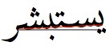
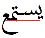

This document describes requirements for the layout and presentation of text in languages
that use the Arabic script when they are used by Web standards and technologies, such as HTML,
CSS, Mobile Web, Digital Publications, and Unicode.
This document describes the basic requirements for Arabic script layout and text support on
the Web and in eBooks. These requirements provide information for Web technologies such as CSS,
HTML and digital publications about how to support users of Arabic scripts. Currently the
document focuses on Standard Arabic and Persian.
If you wish to make comments regarding this document, please raise them as
github issues
.
Only send comments by email if you are unable to raise issues on github (see links below).
All comments are welcome.
To make it easier to track comments, please raise separate issues or emails
for each comment, and point to the section you are commenting on using a URL for the
dated version of the document.
Arabic script is encoded in the Unicode standard semantically, meaning that every
letter receives only a single Unicode character, no matter how many different contextual
shapes it may exhibit.
Unicode also has a partial set of non-semantic encoded characters for the Arabic
script, under blocks Arabic Presentation Forms-A and Arabic Presentation
Forms-B, which are deprecated and should not be used in general interchange.
Arabic script uses Arabic alphabet, diacritics, numbers, punctuations and symbols, and
control characters. Appendix lists these characters.
The majority of these characters are common among different languages. There are two
different set of digits for 0–9 (U+0660–U+0669 and U+06F0–U+06F9) used by different languages. Most of the alphabetical characters are
used by all the languages using Arabic scripts, but there are exceptions, such as the Arabic
letter yeh being represented with two different characters,
U+064A ARABIC LETTER YEH (ي) and
U+06CC ARABIC LETTER FARSI YEH (ی). These differences among the character sets of each language are marked in
the appendix tables.
Control characters are used to produce the correct spelling of the words or to ensure
correct combination with left-to-right content. Consequently, they should be preserved when
storing and displaying texts.
Arabic script is written from right to left. Numbers, even Arabic numbers, are written
from left to right, as is text in a script that is normally left-to-right.
When the main script is Arabic, the layout and structure of pages and documents are also
set from right to left.
Unicode Bidirectional Algorithm
[[!BIDI]] details an algorithm for rendering right-to-left text and covers a myriad of
situations in mixing different kinds of characters. A simpler explanation of the basics of
the algorithm exists in the W3C article Unicode
Bidirectional Algorithm basics. [[UBA-BASICS]] You can refer to these documents for more
information about Unicode’s bidirectional algorithm.
A brief overview of the bidirectional (bidi for short)
algorithm follows, because the direction is an essential part of how Arabic script is
used.
The characters of a text are digitally stored and transferred in the same order that they
are typed by a user. This is the order in which the text is read and pronounced by people and
held in memory by software applications, as shown in for a
sample text.
The order of characters in memory
But the order used when displaying text is different. The purpose of the bidi algorithm is
to find display positions for the characters of a text. These positions are solely used for
displaying texts. shows the same sample text when
prepared for display with the bidi algorithm.
The order of characters when displayed
An initial step of the process involves determining each paragraph’s base direction: whether the paragraph is left-to-right or right-to-left. The
base direction is either explicitly set by the author, inherited from the page, or (typically
for user-generated content) detected based on the content of the paragraph. The base
direction has two important uses later in the process.
The next step is to split the text into directional runs. Each
directional run is a sequence of characters with the same direction.
Splitting a text into 3 directional runs
Inside each run, all the characters follow the same order. The runs themselves are ordered
for visual representation from left to right or from right to left, depending on the base
direction of the paragraph. demonstrates an example
of this. This is the first effect of the base direction.
The effect of base direction on the order of runs
Unicode has a bidi category property defined for each character
that is used to determine the direction of each character. All the Arabic letters are marked
as right-to-left characters, while Latin characters have the left-to-right category.
Some characters, mostly punctuations, are neutral. The
direction of these characters is derived from their surrounding characters. If a neutral
character is surrounded by characters of the same direction (e.g. an space surrounded by
Arabic letters), it gets the direction of its neighbors. Otherwise (e.g. a space between an
Arabic and a Latin, or a neutral character appearing at the start or the end of a paragraph),
the neutral character gets its direction from the paragraph’s base direction. This is another
effect of the base direction in the bidi algorithm.
The above explanation of the bidi algorithm is highly simplified, to convey only the
essentials of how Arabic text is transformed for rendering. The actual algorithm deals with
many more character types and edge cases. Please refer to Unicode
Bidirectional Algorithm basics [[UBA-BASICS]] for more information or Unicode Bidirectional Algorithm [[!BIDI]] for the
official detailed documentation.
Arabic script is a cursive writing system; i.e, letters can join to their neighboring
letters. Besides the core behavior of the script, there are some details on how content is
encoded in Unicode, and some rules around joining behavior when rendering special cases.
Every Arabic letter has one, two, or four different joining forms, which allow the
letter to join to its neighbors, if applicable. These four forms are:
Isolated form, used when the letter does not join to any of the
surrounding letters;
Initial form, used when the letter is joining only to its next
(left-hand side) letter;
Medial form, used when the letter is joining on both sides, and
Final form, used when the letter is joined only to its previous
(right-hand side) letter.
shows samples of all four joining forms for
U+0645 ARABIC LETTER MEEM (م).
Four different letter forms for joining to surrounding letters
We define the following two groups of joining forms:
Join-to-left forms: either Initial form or Medial form of a letter,
which joins to the left-hand side (next) letter. Other forms are called non-join-to-left.
Join-to-right forms: either Medial form or Final form of a letter,
which joins to the right-hand side (previous) letter. Other forms are called non-join-to-right.
There are different categories of letters based on their joining
behavior:
Dual-joining letters: can join from both sides, like the letter in
, and has all the four shapes mentioned above.
Right-joining letters: can only join to their previous (right-hand
side) letter, and therefore, only have isolated and final shapes. shows samples of both forms for U+0631 ARABIC LETTER REH (ر).
Non-joining letters: cannot join to any surrounding letter, and
therefore can only take the isolated form. shows a
sample of U+0621 ARABIC LETTER HAMZAH (ء) in its only possible form.
Right-joining letters only have two forms of final and
isolated.
Most of Arabic letters are either dual-joining or right-joining.
Non-Joining letters only have one form: isolated.
There are core rules on how letters join to each other in the Arabic script, which stay
valid regardless of the medium (hand-writing, typewriter, movable-type, digital, etc):
Letters of each word join together whenever possible, implicitly.
In some languages, like Persian and Urdu, there are words—mostly, but not limited to,
compound words—that require explicit breaks in the joining of letters, although joining
would otherwise be possible.
In certain cases, a letter can be in a join-to-left form
without actually connecting to anything on the left, whether there’s any letter or not.
This is often seen in list counters, abbreviations, and other cases where letters do not
have a word context, or are taken out of their original word context.
In rare cases of words splitting where letters are joined, first letter of the second
half will be in a join-to-right form without any previous
letter. This behavior is limited to special cases like blanking specific letters of a
word, line breaks in a paragraph, and word breaks across poetry verses. No standalone
word can have any letters in join-to-right form without
joining on the right-hand side.
demonstrates how letters join (per Joining Rule 1) to
form a word.
Arabic letters are represented in their intended joining forms in hand-writing,
typewriters, and old (deprecated) digital encodings of the script. In Unicode, letters are
encoded semantically—meaning without any information about their joining form—and therefore
there’s need for a mechanism for controlling of the joining behavior of the letters.
In Unicode, by default, neighbor Arabic letters join together if and only if both
letters are able to join towards the other.
As noted in Joining Rule 2, sometimes two Arabic letters sit next to each other (in
one word) which would normally join together, but should not. In Unicode, for such a
case, a special character should be used to enforce disjoining of these letters. This
character is called U+200C ZERO WIDTH NON-JOINER, or
ZWNJ for short.
Similarly, as noted in Joining Rule 4, sometimes an Arabic letter needs to take a
joining form when it would not happen normally. For example, some abbreviation methods us
Initial Form of letters, when possible, for every letter in the abbreviation. Again, in
Unicode, a special character should be used to enforce joining on this letter. This
character is called U+200D ZERO WIDTH JOINER, or ZWJ for short.
Besides ZWJ, there’s another special Unicode character,
U+0640 ARABIC TATWEEL, which enforces joining behavior (join
causing) on letters next to it. But, in contrast to ZWJ,
TATWEEL has a glyph shape, looking like a hyphen and usually
as wide as the SPACE glyph, which connects to the letters on the main joining line
(a.k.a. base-line). So, using TATWEEL would give a similar
Joining Enforcement behavior, but has a side effect of wider length for the letter, which
is not always desired. That’s why it’s highly recommended to only use ZWJ for joining control.
Example of using ZWJ (recommended) and TATWEEL (not recommended) for joining
enforcement.
In Unicode, ZWNJ and ZWJ are called
Joining Control Characters.
Two enforcement methods mentioned above can be combined together to form a
Joining-Disjoining Enforcement method, that enables
Joining Rule 3 for cases when there’s a dual-joining/right-joining letter after a
join-to-left letter, which should not be joined to its
previous letter.
Example of using <ZWJ, ZWNJ&gd; for joining-disjoining enforcement.
Joining Control is not only managed by the content, but sometimes happens by the word
context. For example, a word may be broken between two joined letters because of line
break, meaning the content is not changed and only the joining form of letters should be
maintained across the break.
A sequence of letters that join together are called a Joining
Segment. Regardless of language, joining segments have no
direct relationship to syllables.
Two types of joining segments exist: closed and open.
Joining Segments usually have a closed form, meaning that they start in a non-join-to-right form and end in a non-join-to-left
form. Closed joining segments are the result of segments
either start and end with their normal behavior (Joining Rule
1), or by disjoining enforcement (Joining Rule 2).
There are two possible types of closed segments:
Single-Letter Closed Segment, which contains only one letter that
is in its Isolated form.
Multi-Letter Closed Segment, which contains more than one letter,
starting with an Initial form, zero or more Medial forms, and ending with a Final
form.
Under the certain cases, as noted in Joining Rules 3 and 4,
joining segments can start with a join-to-right form, or end with an join-to-left
form, or both.
There are three possible types of these segments:
Open-On-Left Segment, which contains one or more Dual-Joining
letters, starting with an Initial form and continuing with zero or more Medial
forms.
Open-On-Right Segment, which starts with zero or more Medial Form
letters, and ends with a Final Form letter.
Open-On-Both-Sides Segment, which contains one or more
Dual-Joining letters, all in their Medial Form.
Arabic Letters, two Joining Control Characters (ZWNJ and ZWJ), and TATWEEL are the only characters used in the Arabic writing system with
joining behavior.
Arabic diacritics, other Unicode non-spacing marks, and most
Unicode format control characters are considered transparent in joining behavior.
All other Unicode characters in Arabic script (as well as Latin and many other major
scripts) are non-joining and do not take any joining forms other than Isolated.
Almost all the writing styles of Arabic script use a special shape when letters
lam and alef are joined. Most
Arabic fonts include mandatory ligatures for this combination. Ignoring this ligature, as
shown in , leads to wrong rendering of text.
Correct and wrong ways of rendering letter lam followed
by letter alef
This shape is not limited to the combination of U+0644 ARABIC LETTER
LAM (ل) with U+0627 ARABIC LETTER
ALEF (ا). Variations of letter alef such as U+0622 ARABIC LETTER ALEF WITH MADDA
ABOVE (آ) and U+0623 ARABIC
LETTER ALEF WITH HAMZA ABOVE (أ) and also variations
of letter lam follow the same rules as well. Combination with
diacritics does not affect these ligatures. Each of these ligatures also provides a special
shape for joining from its right side (to the preceding letter).
More than one diacritics can appear after a single character subsequently and all of them
should be applied over the same character. Font files usually define special shapes or
positioning for combination of diacritics. These extra information should be applied in
rendering texts.
shows an example, where, according to this font’s
specification, combining U+0651 ARABIC SHADDA and U+0650 ARABIC KASRA changes their
positions. Various font files may require different transformations.
Arabic styling and writing has its origins in Islamic art and civilization, and was
widely used to decorate mosques and palaces, as well as to create beautiful manuscripts and
books, and especially to copy the Korʼan. Arabic script is cursive, making it
viable to support different geometric shapes overlapping and composition. Words can be
written in a very condensed form as well as stretched into elongated shapes, and the
scribes and artists of Islam labored with passion to take advantage of all these
possibilities.
From the beginning of Arabic calligraphy, two tendencies or two types of styles can be
seen emerging: writing for the decoration of mosques and sculptures, which was complex and
highly decorative, and writing styles reserved for writing the Korʼan, which were
easier to use and more readable.
Writing styles then evolved under the influences of cultural diversity, leading to
regional calligraphic schools and styles (Kufi in Iraq, Farsi and
Taʻlīq in Persia, or Diwani in Turkey). Additional differences arose
depending on the purpose of writing, such as the copying and dissemination of the
Korʼan.
In general we group under the generic term Naskh
(copy/inscription) the scripts which are meant for reading at smaller sizes and are
suitable for books and texts to be read, e.g. the Korʼan, and as
Kufic the highly stylized font styles used for ornamentation and
more styled writings. Nevertheless, the rich evolution of the Arabic script led to the
distinctive enumeration of a number of additional named styles.
Similarly, two other generic terms are used to classify styles : Mabsut (wa
Mustaqīm) is a form of style that is elongated and straight angled, [which dominated
the copies of Korʼan in eighth and ninth centuries], and Muqawwar (wa
Mudawwar) is a form of style that is curved and rounded.
Basics and principles of Arabic writing were defined by Ibn Moqlah (886-940
Higra), who defined six styles of writing: Kufi, Thuluth, Naskh,
Ruqʻa, Taʻlīq and Diwani.
One of the oldest and best known Arabic scripts. It is characterized by its
decorative and pronounced geometric forms, well adapted for architectural designs. The
style grew with the beginning of Islam to satisfy a need for Muslims to codify the
Korʼan.
(The third.) Recognizable by the fact that the letters and words are highly
interleaved in its complex form. May be the most difficult style to write (requiring a
significant amount of skill), both in terms of its letters and in terms of its
structure and composition.
One of the clearest styles of all, with clearly distinguished letters which
facilitate reading and pronunciation. Can be written at small sizes (traditionally
using pens made of reeds and ink), which suits the production of longer texts used for
boards and books intended for the general population, especially the Korʼan.
A handwritten style still commonly used in Arabic countries, and recognisable by its
bold-like letters written above the writing line. Designed to be used for education,
for everyday writing and adopted in the offices (Diwan) of the Ottoman Empire.
One of it's feature is that calligraphers have kept it and did not derived variations
from it.
Taʻlīq (hanging) is a beautiful script characterized by the precision and
stretch of its letters, its clarity, and its lack of complexity. Designed for Persian
language, until replaced by Nastaʻlīq.
Used by the Ottman court (Diwan) to write official documents. Some
variations of it are still in use today (e.g. hand written documents by some religious
officials).
We can add other font styles to this list, such as the following :
Persian version of Taʻlīq, derived from Naskh and Taʻlīq
and developed in the 8th and 9th centuries. It is like a Taʻlīq but easier to
write and read. Shekasteh Nastaʻlīq (literally means "broken Nastaʻlīq") is
also another derivation of those two, developed in the 15th century.
Used in the past in the western islamic world (Andalusia), and still now in North
Africa. Used for writing the Korʼan as well as other scientific, legal and religious
manuscripts. Rabat, a mabsut version of it,
is widely used in some official printings in Morocco.
Arabic script has some characteristics that are challenging for typographers and font
designers. Examples bellow show some characteristics worth to be considered carefully. How
could typography, which came late to the Arabic world, then follow the tradition of the
many authors and artists who manually shaped the Arabic writing over decades? even in it's
simplest Naskh style?
Multi-level baselines
Letters may join through a finely inclined line

or two, square-ended lines

Multilevel baselines don't occur in all fonts. The above examples use the Arabic
Typesetting font. Compare those examples to to more typical fonts:
Multi-context joining
Rendering of letters depends not only on their place in the word (initial, medial,
final) but also on their neighboring letters, i.e. the letter they join with. Each
letter has a different appearance in each combination.
Initial letter noon, showing many different forms.
Fonts don't always comply with or respect this kind of tuning. To do so, fonts need many glyphs in order to adapt to each
context. In more modern typefaces some of these connections are implemented by
ligatures, but ligatures can't capture or cover all joining behavior.
In the two left most words, the initial noon differs in that one raises a kind of
stroke. This property of raising a stroke is common for a number of letters (beh, teh,
noon, theh) which are taller than their connected letters in order to be distinguished
in some contexts, such as vs. , or to resolve ambiguity. See also the section about teeth letters
below.
Words as groups of letters
A word shape is not (only) a "horizontal" connections of letters, but of groups of
letters (syntagmes).
Example two words in some nice Naskh font.
Groups of letters are colored blue or red
To compare with the same words in more usual font:
Can't really say letter groups. Rather a "horizontal sequence of letters of almost
same width".
Group combinations cannot be covered by general or usual ligatures.
Verticaljoining
Groups of letters may also "join" vertically (top down) instead of right to left.
And not all fonts permit this.
vs.
Joining happens almost vertical
Joining happens horizontal
Once again, some fonts try standard ligatures, but this is not ligature. This is
rather (good) writing practice/style.
One should note that all this characteristics has not only an aesthetic side, but
also play a role in justification. It is at the discretion of (hand writing) authors to
chose the best kind of joining to suit the desired line width. Should then be a general
rule on that. But to achieve such justification would require sophisticated
algorithms.
The so called teeth letters.
Letters having uniform medial shape, align in a kind of teeth.
Even in the teeth context letter shape may vary. It's not the same letters (in red)
which raise the stroke in the two figures.
Arabic script counts 26 letters, and mostly 19 basic shapes. Since letters change
according to their position in the word, Arabic set of glyph may range to more than one
hundred shapes. If one count possible ligatures, and different combination of joining forms
(see above), the number of glyph can increase further. Not sure that typeface design can
accommodate all needs, even though some present typefaces can run hundred of shapes.
Early typefaces, some still in use today, were designed with some facilities. Designer
of those differs in their simplification hypothesis. For example, one of the first approach
is to use "type writer style", that is a same glyph for different positions in a word. This
is the case for initial and medial shape for most of the letters (example here). It is
generally the browser default font for Arabic script. A more unifying approach is the use
of a single and detached glyph for each letter without joining (todo example here). Other
approach were used resulting in more or less visually practical fonts.
Nowadays, there is a large choice of fonts, and one can choose the font that best suits
to one's typographical desire. However, one may also wishes to take into account some non
typographical considerations like: (TBD later on)
Accessibility (readability and visibility) ...
The kind of device with small screen (for example, larger loop and teeth height,
small descenders etc...), although fonts actually appear better on smartphones
Font style for titles and banners and alike (small number of words), may differ from
the style for content text (long text).
Shapes and proportions (the size issue) in mixed texts
Some fonts might give another opportunity for line justification than the one based
on word spacing (See section 4.2.4 Ligatures).
Word, sentence and paragraph boundaries are largely deliminated by spaces and punctuation
as in most Latin script text.
However, there are exceptions, such as the "و" conjunction in Arabic orthography, "ل"
before a non-Arabic script noun, and the misuse of space in place of ZWNJ in some Arabic
script languages.
Should all ligatures be selectable as a single unit, or as individual parts
corresponding to the underlying characters?
In Arabic script text it is unusual to use diacritics for vowel information and for
consonant lengthening. If they are used, however, there are different approaches to their
placement relative to the base characters they modify. Some fonts display short vowel
diacritics at the same height, while others vary the height according to the base
character.
Another potential difference arises when a short i vowel diacritic is used with a shadda.
In some cases the vowel diacritic remains below the base letter, whereas in other cases the
vowel diacritic appears above the base letter, but under the shadda (so that it can be
distinguished from the short a vowel diacritic, which appears above the shadda).
Some applications allow adjustment of the distance between the diacritics and the
base character. Is this a requirement for most text systems?
What about adjustment to the horizontal position of the diacritic?
Should it be possible to influence whether a font places the kasra below the base
character or immediately below the shadda, when combined with the latter?
There are situations where Arabic text is stretched for reasons other than justification.
Common instances include:
In a heading, or a word on a street sign to make it more visible.
Alongside a transcriptions, to make Arabic text the same width.
To mimic voiced emphasis or drawn out sounds
These instances do not correspond to letter-spacing in non-cursive scripts, however. Apart
from the fact that the stretching is indicated by stretching the baseline between characters,
the stretching is not usually equidistant between all characters in the stretched text.
Is this really letter-spacing, or is it seen as something different?
Can we codify any rules for how the elongation happens? Are they the same rules as
for justification? (Probably not, in the case of mimicking voice.)
The cursive nature of the Arabic script requires more attention when applying some visual
styles to the texts. It mostly occurs when the implementation assumes letters as separated
shapes and does not account for cursive scripts.
The only spaces inside Arabic words are created near characters that are not
dual-joining. When adjusing intra-word spaces (i.e. the space inside the words) only these
spaces can be adjusted. Moving two joined characters closer to or further from each other
creates undesirable results.
Arabic fonts achieve joining by overlapping letters. A left-joining letter extends out
of its bounding box from the left side and a right-joining letter extends out of its
bounding box from the right side. Making each letter transparent can expose these
overlapping joinings, which should be avoided. Joining the paths of the joined letter into
a single shape can remove the overlappings and create the good results.
Applying transparency to Arabic letters should not expose their joining overlaps.
When adding text border, simply adding a border to each letter shape fails to produce
the proper result for the Arabic script. A joined letter should not be separated from its
joined neighbors by adding border. Like transparency, a way to avoid this is to unify glyph
paths into a single big path for all the letters that are joined and add border around that
path.
For educational, technical, or even aesthetic reasons, users might want to apply a
specific style to a single letter (or a few letters) in a word. For example, is the logo of the largest telecommunications provider in
Oman.
Colour changes across joining characters in the logo for Omantel.
This should not break the letter’s joining with its neighbors, as shown in .
Applying style to a single letter should not interfere with its joining properties.
Arabic ascenders and descenders extend much further than those of the Latin script, and
care must be taken to correctly align text in the different scripts when they appear
together.
What are the font-size aspects that must be considered in mixed text scenarios?
Before entering this section in we need to introduce few preferred terminological
conventions for disambiguation and simplicity.
European Numerals are
0, 1, 2, 3, 4, 5, 6, 7, 8, 9. They are also referred to as Western
Arabic Numerals or simply as Arabic Numerals. Although
these are terminologically correct terms, to avoid confusions we will refrain from using
these phrases to refer to these numerals. European Numerals or
ASCII Digits are used instead;
There are three families of numerals used with languages using the Arabic Script.
The first is known as European Numerals; the second family is Arabic-Indic Numerals.
The third is Eastern Arabic-Indic Numerals. The following table, based on a similar table in
[[W3-ARAB-MATH]] exhibits these three families:
Family
Unicode Range
Numeral Digits
Regions in Use
European
U+0030..U+0039
0
1
2
3
4
5
6
7
8
9
Western Arabic-speaking countries; e.g. Algeria or Morocco.
Arabic-Indic
U+0660..U+0669
٠
١
٢
٣
٤
٥
٦
٧
٨
٩
Arabic-speaking countries of the Middle-East, eastern Arabic-speaking countries; e.g. Egypt.
Eastern Arabic-Indic
U+06F0..U+06F9
۰
۱
۲
۳
۴
۵
۶
۷
۸
۹
Iran and Afghanistan.
Arabic numbers are written with the lowest significant digits to
the right and the highest digits to the left. That arrangement is
identical to the Western one, even though Arabic script is written
from right to left. Numbers with many digits use delimiters for the
decimal part and thousands separator :
Western digits use comma (U+002C) and full stop (U+002E)
indifferently as decimal and thousands separator:
1.234,5 in Western (francophone) regions.
1,234.5 in Middle-East (anglophone) regions.
Thin space (U+2009) or narrow no-break space (U+202F) may also
be used as thousands separator.
Arabic-Indic numerals use two specific separators:
Arabic Decimal Separator ٫ (U+066B) like comma.
Arabic Thousand Separator ٬ (U+066C).
Example : ١٬٢٣٤٫٥ .
An important fact to note here is the bidirectional category of
these numbers.
European Digits (U+0030 - U+0039) are of category "EN - European
number",
Arabic-Indic Digits (U+0660 - U+0669) are "AN - Arabic number",
Eastern Arabic-Indic Digits (U+06F0 - U+06F9) are classified "EN
- European number", differently from their counterpart just above.
The difference in Bidi category between Arabic-Indic digits and
Eastern Arabic-Indic digits is due to the difference in Bidi
behavior desired in Arabic vs. Persian.
What is the origin of this decision.
As a consequence, a sentence like « Five is written ۵ in Iran and ٥
in Egypt », say, will give (in RTL context)
« Five is written ۵ in Iran and ٥ in Egypt »
requiring the use of markup to correct it. Which is not the case
with the sentence « Five is written ۵ in Iran and 5 in Morocco ».
Numbers do not always appear alone, and may come with other
characters like financial symbols, fraction sign, decimals and/or
thousands signs (excluding math expressions here). At first, there
are proper signs used for the script such as Arabic percent/permille
sign ٪ (U+066A) and ؉ (U+0609), Arabic decimal " ٫ " (U+66B)
and thousands " ٬ " (U+066C) separators, mentioned earlier and
mostly used with Arabic-Indics.
Numerals can also come separated by or mixed with space or other
signs. Example are phone numbers
+12 34 56 78 89, cars licence plate like
123 د 4, quantities 37.5°, ٥٠ كلم (50km)
etc.
A particular attention is needed here. Firstly, numbers have a weak
directionality with regards to Bidi algorithm. For example,
alongside a number, certain otherwise neutral characters, such as
negative/positive sign, currency or degree symbols, are likely to be
treated as part of the number rather than a neutral.
Secondly, the placement of the accompanying signs and symbols may
depend on regions. Generally Middle East (or anglophone regions) vs.
Western (or francophone regions). This is not to mention punctuation
signs.
The percent sign is to be placed on the left after the number
(٪١٢ not ١٢٪), without space (٪ ١٢). With European numbers,
the % percent sign is sometime used, and placed indifferently on
the right or the left of the digits (12% or %12).
Arabic decimal and thousand sign obey to the same rule as for
European numbers (١٬٢٣٤٫٥٦). European signs are used with
European numbers (1.234,56 or 1,234.56).
Money or currency signs when they come alongside a number, are
to be placed at the left and be treated as part of the number
rather than a neutral (€12.3 or €١٢٫٣).
Unlike degree sign that is to be placed at the right of the
number (37.5° C, ٩٩٫٥° F) or (37.5° م,
۹۹٫۵° ف).
For quantities measurement, there should a
separating space (12 كغ, ٤٥ مم).
The same apply when using range of values. (12-15 كغ,
but 12٪-15٪ كغ).
Solidus sign " / " (U+002F) is used for fraction or ratio
notation. Fraction are noted for one-half, say, 2/1 or ٢/١, mostly
in RTL mode. There is no standard way, however, and some
region/author may write 1/2 for European digits.
May be use image for examples.
Notation with Solidus sign " / " are used in:
Notation such as speed "50 km/h"
كم/س 50
Notation such as "Page / Volume", for example a reference to
a page in a volume
١٢٣/١ for volume ١, page ١٢٣
or reference to Quran "Verse / Surah",
١٣/٩٠ for Surah 90, Verse 13
Mark or rank in a classification
20/15 for rank 15 over 20
Dates (2017/06/24, ٢٠١٧/٠٦/٢٤)
Look for evidence for some examples
Other issues
How to know that a sign (space, comma ...) is a separator or a
sign within a number? +12 34 56 78 90
is a phone number or a sequence of digits? Which may be inverted
in RTL. A tip is to use a syntax like 12.34.56.78.90
or 12-34-56-78-90 for phones.
May be mention the Decimal Separator Key Symbol " ⎖ " (U+2396),
used with keyboards (resembles an apostrophe)
Old text bellow
Arabic script uses non-European digits for numbers in certain locales and situations.
Arabic digits are also used for counters (see ).
Describe the arabic-indic digits, and when they are used, including the distinction
between arabic-indic and eastern-arabic-indic digits.
Provide resources and guidelines on how to choose the right set of numerals based on
the language.
When Arabic text doesn't fit within the available line width, the text is wrapped to the
next line between words.
In bidirectional text, if a line break occurs between a sequence of words that are
progressing in a left-to-right direction the first line will be filled with LTR words that
come at the start of the phrase in the order spoken (ie. not the visual order when laid out
in a single line). This is because it is never correct to read lines from bottom to top. A
similar rearrangement is required when a sequence of right-to-left words is split at the end
of a line in an overall LTR context.
In Urdu words are not necessarily bounded by spaces. What method is used for
determining appropriate break points in this case?
What other characters besides SPACE constitute break points for automatic line
wrapping?
What are the rules for hyphenation in Arabic script text?
The CSS Text spec says "When shaping scripts
such as Arabic are allowed to break within words due to hyphenation, the characters must
still be shaped as if the word were not broken." The example shows Uighur text with a
hyphen at the end of a line and with shaped characters at line end and start. Is this
normal in Arabic and Persian text also?
In some styles of CJK typesetting, English words are allowed to break between any two
letters, rather than only at spaces or hyphenation points. Are the rules different form
Arabic script text?
The CSS spec says
"When shaping scripts such as Arabic are allowed to break within words due to break-all,
the characters must still be shaped as if the word were not broken." Is this true?
The CSS
hanging-punctuation property allows the arabic comma and arabic full stop to hang
in the margin, rather than wrapping them to the next line. Is this appropriate?
What are the rules for elongation of inter-character baselines, and how do they
differ from one font style to another?
When is it appropriate to use which method?
Is the tatweel character useful?
What should happen if an application uses a Ruqʻah font as a fallback, which cannot
allow for word elongation? Does the application need to automatically know that it
should not stretch words when using this font style?
How does an application or person decide which methods to use, and where, to
justify text?
The CSS Text spec says: that, apart from elongation, applications "must assume that
no justification opportunity exists between any pair of typographic letter units in
cursive script (regardless of whether they join). " Is this correct? InDesign, for
example, allows alterations of gaps in the middle of a word where one character doesn't
join with the following character.
There are a number of different ways to produce justified text in Arabic. In some cases
several of these methods may be combined. In other cases, certain methods are
disallowed.
Typical methods include:
Expansion or contraction of inter-word spaces.
Expansion or contraction of intra-word spaces, ie. the space following a character in
the middle of a word that doesn't join with the character that follows it.
Use of wider glyph forms for certain characters.
Stretching of the joins between characters, known as 'kashida'.
Use of ligated forms, to reduce space taken by characters on a line.
Of the four basic justification methods (flush left, flush right, justified, and
centered), justified is the most challenging, as it requires changing the widths of the lines
to a pre-defined measure. Measure refers to the width of a column
of text. In a justified paragraph the width of all the lines should be the same as the
paragraph’s measure (except, of course, the last line).
In Arabic there are six mechanisms for changing the width of a line of text. Each one has
its limitations and considerations on when and how it can be applied. Furthermore, different
typographers and calligraphers have divergent preferences for these mechanisms.
An important factor in the application of these mechanisms is their success in creating an
even color. The color of the text refers to the amount of
ink/blackness used to print or show a block of text. Color describes the density of the text
against its background. Poorly justifying paragraphs can create uneven distribution of
color.
These mechanisms are not exclusive. Quite the contrary, they are commonly used
simultaneously to produce better justified paragraphs. Combination of these mechanisms is
discussed in Combination of the
Mechanisms.
This is the same mechanism widely used when justifying Latin scripts, where the width of
the spaces between the words can be increased or decreased to change the width of the
line.
Aligning lines by increasing and decreasing spaces between the words.
A minimum width is defined for how much the space can be shrunk, because putting the
words too close to each other creates aesthetic and legibility problems.
Stretching the space too wide is also undesirable, but is utilized as a last resort when
it is not possible to use other solutions to make fully justified paragraphs. In some
applications a maximum width for the inter-word space is defined as a soft limit (compared
to minimum width which is a hard limit). Reaching the maximum width makes the software to
try to use other solutions for justification. If no other solution could yield the required
result, the software would fall back to inter-word spacing and stretch the space past the
maximum width.
Depending solely on this mechanism for aligning lines in a justified paragraph can lead
to unpleasant results, such as rivers (multiple stretched spaces appearing vertically close
to each other and forming a white gap inside the paragraph) and uneven distribution of
color in the paragraph. Hence, typographers generally use other mechanisms as well to
minimize the effect of adjusting inter-word spaces.
This solution alters the space between letters of each word to change the width of the
text. Like adjusting inter-word spaces, this is used for Latin scripts as well, but using
it for Arabic script involves considerations specific to Arabic. As noted in Joining and Intra-Word Spaces, the principal consideration is
that gaps between characters only exist for those letters that join only to the right, such
as dal and reh . Adjustment
of intra-word space is not relevant where one letter is joined to its neighbors.
Altering intra-word spaces between unjoined letters.
Depending on the writing style and the typeface in use, different amounts of alteration
to the intra-word space is acceptable for Arabic. Some writing styles allow more liberal
adjustments to the closeness of the letter groups, while others can only accept small
adjustments in this regard. In any case, much smaller adjustments can be used for
intra-word spacing in comparison for inter-word spacing, which naturally is wider and
tolerate bigger adjustments.
In addition to the four joining forms (isolated, initial, medial, and final), each
Arabic letter can come with different shapes while preserving its joining form. For
instance, a typeface or writing style can offer two or more shapes for the final form of a
single letter.
These variant shapes usually have variant widths and hence can be used to adjust the
width of the line.
Alternative shapes for changing the width of the text.
An advantage of using alternative letter shapes when justifying paragraphs is that it
does not involve modifying default properties of the typeface (width of space or other
characters). Instead, it is using shapes that are part of the typeface and are in harmony
with other shapes in the lines.
But excessive use of alternative shapes, such as using multiple very wide alternatives
close to each other, can create unnatural results.
It is not possible to justify paragraphs using only alternative letter shapes, because
these shapes have predefined widths. For example, if a line should get 25 points wider, it
is impossible to achieve that by using alternative letter shapes that are, say, 10 or 20 or
30 points wider than the default shapes. But these shapes can make the lines closer to
measure, thus reducing the usage of other mechanisms.
Some Arabic fonts, following the writing styles that use special shapes when joining
certain letters, provide a rich number of ligatures. These ligatures can be used in
paragraph justification, since they usually reduce the widths of the words.
Various ligatures reducing the widths of the words
But existence of the ligatures in a font does not mean that they can be used freely. A
font may provide some of its ligatures for creating an artistic style, which would be
unsuitable for texts requiring optimum legibility.
For that reason, the user should be able to select which sets of ligatures can be used
for justification. Fonts can offer predefined sets of ligatures to simplify this
process.
Kashida refers to extending the horizontal connection between joined letters.
Two words extended with kashida.
This is a feature deeply related with the cursive nature of Arabic script. Kashida is an
interesting tool for paragraph justification. It is more flexible than alternative letter
shapes and ligatures, because it is not restricted to a limited number of predefined
widths. At the same time, it has relatively less effect on the text color than spacing.
But a proper implementation of kashida involves a number of limitations and
considerations.
Excessive use of kashida or applying very long kashidas results in uneven color. Also,
horizontal or vertical proximity of numerous kashida creates an unnatural color.
Unpleasant result of excessive use of kashida.
Kashida is not always straight. Some fonts may require curvilinear kashidas, which
require more advanced implementations.
Curvilinear kashida
Typographers can have preferred places for applying kashidas. In other words, instead of
applying kashida between every joined pair of letters, they want it at certain joins.
There are multiple joins in this word, but only one is selected for kashida.
Another preference is avoiding multiple kashidas in a single word.
Tatweel is a dual-joining character that can be inserted between two joined letters to
widen their connection. In The Unicode Standard, tatweel is represented as U+0640 ARABIC TATWEEL (ـ).
Tatweel
Tatweel extends letter connections in a fashion similar to kashida, but in a much more
limited way. It is a character that has to be in the text or inserted like other
characters. It has a predefined width, like any other character.
Yet it is much simpler to implement, since it acts like normal Arabic characters and
does not require special treatment. For this reason, it can be considered useful specially
in constrained implementations like fixed-width environments.
Each of the above six mechanisms have their own limitations and side effects. Utilizing
only one of them for justifying paragraphs can create undesirable results. Multiple
mechanisms can be used at the same time to work around their limitations and minimize their
side effects.
Since Arabic provides various mechanisms that can be used for justification, an advanced
implementation that supports all or most of the above features can produce exemplary
justifications. More limited applications can combine what is available.
Preferences for each mechanisms can depend on the document and text and the preference
of the typographers and users. Implementations can enable users to prioritize and control
the mechanisms mentioned above.
In situations where short runs of text run vertically, for example on book spines or in table headers, Arabic text is rotated to run along the line. It may be rotated so that the tops of the letters face to the left (read the text from top to bottom) or to the right (read the text from bottom to top).
Vertical Arabic, top-down and bottom-up flow
The flow of text, top-down vs. bottom-up, may depend on regions or authors. The left case in is a typically francophone style for book spines, whereas the right case is an anglophone style.
When Arabic is embedded in body text that is set vertically, such as CJK or Mongolian text, it is also normally rotated so as to run along the line. Typically, the Arabic text will be read from bottom to top of the line.
When the Arabic text spans more than one line, the text is wrapped in the same way as it would be in horizontal text, ie. the first part of the Arabic text is kept on the first line, and subsequent parts of the Arabic text appear on subsequent lines. Therefore, in the case of Mongolian, where lines are read left-to-right, the Arabic text lines are also read left-to-right, whereas in Chinese or Japanese, where vertical lines are normally read right-to-left, the Arabic text lines are also read right-to-left.
There are attested cases of Arabic text arranged vertically with the letters upright, for example in signboards for cinemas or theatres. It is not clear, at this point whether this a standard approach for Arabic text, or just an unusual layout that mimics Western typographic approaches.
Arabic upright on a front movie (see arrow).
The following should be noted in .
Letters flow from top to bottom (as with Latin script).
Isolated form of letters seems more appropriate here than the joined
form.
Diacritic marks, if any, must be applied to letters and not appear on separate lines.
We need to establish whether this is a standard approach or just an oddity. The items in the list above are important to note, however, we need to check whether isolated forms are always used, and the direction is always top to bottom when upright letters are used.
The following tables list Unicode characters used for Arabic script. Each table has two
columns named Ar and Fa which denote
which characters are used for Arabic or Persian languages, respectively. The content of these
columns is one of these symbols:
✓ means that the character is used for that
language.
✲ means that the character is auxiliary for that
language.
✕ means that the character is not used for that
language.
Unicode 6.3 introduced directional isolate characters to replace the more complicated
directional embedding characters. These new characters are in the process of being supported
in applications and their usage is encouraged over the old embedding characters. U+202A LEFT-TO-RIGHT EMBEDDING, U+202B RIGHT-TO-LEFT
EMBEDDING, U+202C POP DIRECTIONAL FORMATTING, U+202D LEFT-TO-RIGHT OVERRIDE, U+202E RIGHT-TO-LEFT
OVERRIDE are the old embedding characters and U+2066 LEFT‑TO‑RIGHT
ISOLATE, U+2067 RIGHT‑TO‑LEFT ISOLATE, U+2068 FIRST STRONG ISOLATE, and U+2069 POP DIRECTIONAL
ISOLATE are the new isolate characters.
Also, character U+FEFF ZERO WIDTH NO-BREAK SPACE is deprecated
and should be replaced with U+2060 WORD JOINER.
Glossary
Term
Arabic
Transliterated Arabic
Persian
Transliterated Persian
Definition
abbreviation
اِخْتِزَالْ
ikhtizāl
alignment
مُحَاذَاةْ، تَرصِيف
muḥādhāt, tarṣīf
همترازی
hmtrāzi
alphanumeric
أَبجَدِي عَدَدِي
abjadī ʻadadī
الفبایی عددی
ālfbāiy addi
appendix
مُلحَق
mulḥaq
ضمیمه
zmimh
arabic numerals
أَرْقَامْ عَرَبِيَّة، أَرْقَامْ أُورُوبِيَّة
arqām ʻarabīyah, arqām ūrūbīyah
ارقام عربی
ārqām arbi
Refer to "European numerals". Use "European numerals" or "ASCII numerals" to avoid confusion.
ascender
جُزْءُ الحَرْفِ العُلْوِي، الصَّاعِدْ
juz’u al-ḥarfi al-ʻulwī, al-ṣṣāʻid
خط صعود، کرسی بالا
xt s’ud, krsi bālā
asterisk
نَجْمَة
najmah
ستاره
stārh
auto spacing
تَبَاعُدْ ذَاتِي، فَرَاغْ آلِي
tabāʻud dhātī, farāgh ālī
فاصلهگذاری خودکار
fāslhɡzāri xudkār
back margin
الهَامِشْ الخَلْفِي
al-hāmish al-khalfī
حاشیهٔ داخلی
hāšihٔ dāxli
back matter
بَيَانَاتْ نِهَايَةْ الكِتَابْ
bayānāt nihāyat al-kitāb
واحدهای پس از متن
uāhdhāy ps aoez mtn
Appendices, supplements, glossary of terms, index and/or bibliography, and so on, appended at the end of a book.
A virtual line on which almost all glyphs in Western fonts are designed to be aligned.
bibliography
المَرَاجِعْ
al-marājiʻ
کتابنامه
ktābnāmh
A list of works and papers related to the subjects in the text.
blank page
صَفْحَة فَارِغَة
ṣafḥah fārighah
صفحهٔ خالی
sfhhٔ xāli
An empty page.
bleed
خَارِجْ إِطَارْ الصَّفْحَة
khārij iṭār al-ṣafḥah
تصویرْ تا بُرِش
tsuyrْ tā boreš
To print a picture or a tint to run off the edge of a trimmed page.
block direction
اِتِّجَاهْ المَقْطَعْ، اِتِّجَاهْ الكُتْلَة
ittijāh al-maqṭaʻ, ittijāh al-kutlah
جهت نوشتار
jht nuštār
The progression direction of lines, one after the other.
block quotation
كُتْلَة اِقْتِبَاسْ، مُرَبَّعْ اِقْتِبَاسْ
kutlat iqtibās, murabbaʻ iqtibās
نقلقول پاراگرافی
nqlqul pārāɡrāfi
body type
الخَطْ الرَّئِيسِي
al-khaṭ al-rra’īsī
حروف بدنه
hruf bdnh
bold
غَلِيظْ
ghalīẓ
حرف سیاه
hrf siāh
A kind of font style. Similar to bold in Western typograpy.
boldface
خَطْ غَلِيظْ
khaṭ ghalīẓ
حرف سیاه
hrf siāh
bound on the left-hand side
مُلْزِمَة عَلَى الجَانِبْ الأَيْسَرْ
mulzimah ʻalá al-jānib al-’aysar
صحافی چپبهراست
shāfi čpbhrāst
Binding of a book to be opened from the left.
bound on the right-hand side
مُلْزِمَة عَلَى الجَانِبْ الأَيْمَنْ
mulzimah ʻalá al-jānib al-’ayman
صحافی راستبهچپ
shāfi rāstbhčp
Binding of a book to be opened from the right.
bounding box
المُرَبَّعْ المُحِيطْ
al-murabbaʻ al-muḥīṭ
کادر محیطی
kādr mhiti
box
مُرَبَّعْ
murabbaʻ
کادر، جعبه
kādr, j’bh
braces
قَوْسَيْنْ
qawsayn
آکولاد
ākulād
{ and }
brackets
قوسين قَوْسَيْنْ مُرَبَّعَيْنْ
qawsayn murabbaʻayn
کروشه
krušh
[ and ]
break (a line)
فَصْلْ السَّطْرْ، قَطْعْ (سَطْرْ)
faṣl al-saṭr, qaṭʻ (saṭr)
شکستن (خط)، سطرشکنی
škstn (xt), strškni
To place the first of two adjacent characters at the end of a line and the second at the head of a new line.
broadside
وَرَقَة عَلَى صَفْحَة عَرِيضَة
waraqah ʻalá ṣafḥah ʻarīḍah
یکرو
ikru
In book typography, a sheet of paper printed as one page.
bullet
رَمْزْ نَقْطِي
ramz naqṭī
centered dot
calligraphy
فَنُّ الخَطِّ، الخَطُّ (فَنْ الخَطْ، الخَطْ)
fannu al-khaṭṭi, al-khaṭṭu (fan al-khaṭ, al-khaṭ)
خوشنویسی
xušnuysi
caption
تَسْمِيَة، عُنْوَانْ
tasmīah, ʻunwān
عنوان، شرح
’nuān, šrh
A title or a short description accompanying a picture, an illustration, or a table.
cell
خَلِيَة
khalīah
سلول
slul
Each element area of tables, cell.
cell contents
مُحْتَوَى الخَلِيَة
muḥtawá al-khalīah
محتوای سلول
mhtuāy slul
The content of each cell in tables.
cell padding
حَشْوْ الخَلِيَة
ḥashw al-khalīah
Spaces between line and cell in tables.
centered alignment
تَوْسِيطْ
tawsīṭ
ترازبندی وسطچین
trāzbndi vstčin
centered dot
نُقْطَة مُوَسَّطَة
nuqṭah mūassaṭah
centering
تَوْسِيطْ
tawsīṭ
وسطچین کردن
ustčin krdn
To align the center of a run of text that is shorter than a given line length to the center of a line.
chapter
فَصْلْ، بَابْ
faṣl, bāb
فصل
fsl
character
حَرْفْ
ḥarf
حرف
hrf
character count
عَدَدْ الحُرُوفْ
ʻadad al-ḥurūf
تعداد حروف
t’dād hruf
character frame
إِطَارْ الحَرْفْ
iṭār al-ḥarf
Rectangular area occupied by a character when it is set solid.
character set
مَجْمُوعَةْ حُرُوفْ
majmūʻat ḥurūf
مجموعهٔ حروف
mjmu’hٔ hruf
character shape
شَكْلُ الحَرْفْ
shaklu al-ḥarf
شکل حرف
škl hrf
Incarnation of a character by handwriting, printing or rendering to a computer screen.
character size
حَجْمُ الحَرْفْ
ḥajmu al-ḥarf
اندازهٔ حرف
āndāzhٔ hrf
Dimensions of a character. Unless otherwise noted, it refers to the size of a character frame in the block direction.
closing bracket
قَوْسْ إِغْلَاقْ
qaws ighlāq
کروشه بسته
kruše bsth
code point
نُقْطة تَرْمِيزْ
nuqṭat tarmīz
color
لَوْنْ
lawn
Characteristics like darkness, contrast, texture that give the an overall impression of how dense or heavy the text appears on the page.
colon
نُقْطَتَيْنْ
nuqṭatayn
دونقطه
dunqth
column
عَمُودْ
ʻamūd
ستون
stun
A partition on a page in multi-column format.
column gap
تَبَاعُدْ الأَعْمِدَة
tabāʻud al-’aʻmidah
فاصلهٔ ستون
fāslhٔ stun
Amount of space between columns on a page.
column spanning
عَبْرُ الأَعْمدَة
ʻabr al-’aʻmidah
A setting style of illustrations, tables, etc., over hanging to multiple columns.
column spanning heading
رَأْسْ عَبْرْ الأَعْمدَة
ra’s ʻabr al-’aʻmidah
Headings using multiple columns.
comma
فَاصِلَة
fāṣilah
ویرگول
uyrɡul
composition
تَرْكِيبْ
tarkīb
حروفچینی و صفحهبندی
hrufčini v sfhhbndi
Process of arrangement of text, figures and/or pictures, etc on a page in a desired layout (design) in preparation for printing.
compound word
كَلِمَة مُرَكَّبَة
kalimah murakkabah
کلمهٔ مرکب
klmhٔ mrkb
connection
وَصْلْ
waṣl
continuous pagination
تَرْقِيمْ الصَّفَحَاتْ المُسْتَمِرْ
tarqīm al-ṣṣafaḥāt al-mustamir
صفحهشماری پیوسته
sfhhšmāri pivsth
a) To number the pages of a book continuously across all those in the front matter, the text and the back matter. b) To number the pages continuously across those of all books, such as a series published in separate volumes. Also to number the pages continuously across those of all issues of a periodical published in a year, aside from pagination per issue.
control characters
حُرُوفْ تَحَكُّمْ
ḥurūf taḥakkum
حروف کنترلی
hruf kntrli
copy
نُسْخَة
nuskhah
نسخه
nsxh
cover
غِلَافْ
ghilāf
جلد
jld
cut-in heading
A style of headings. Headings do not occupy the full lines, but share lines area with following main text lines.
dash
وَاصِلَة
wāṣilah
dedication
إِهْدَاءْ
ihdā’
اهدائیه
āhdā’ih
descender line
مَا تَحْتَ السَّطْرْ
mā taḥta al-ssaṭr
A descender is the part of a letter extending below the base line, as in 'g', 'j', 'p', 'q', or 'y'. A descender line is a virtual line drawn at the bottom of descender parallel to base line.
diacritical marks
علامات التشكيل
ʻalāmāt al-ttashkīl
اِعراب، نشانههای حروف
āe’rāb, nšānhhāy hruf
diagonal fraction
جُزْءْ قُطْرِي
juz’ quṭrī
diagram
رَسْمْ بَيَانِي، رَسْمْ تَخْطِيطِي
rasm bayānī, rasm takhṭīṭī
نمودار
nmudār
disconnection
فَصْلْ
faṣl
discretionary hyphen
وَاصِلَة لَيِّنَة
wāṣilah layyinah
See soft hyphen.
display
عَرْضْ
ʻarḍ
نمایش
nmāyš
display type
نَوْعْ العَرْضْ
nawʻ al-ʻarḍ
document
وَثِيقَة، مُسْتَنَدْ
wathīqah, mustanad
سند
snd
dpi
نُقْطَة فِي البُوصَة
nuqṭah fī al-būṣah
نقطه در اینچ
nqte dr ieynč
Dots per inch (DPI, or dpi) is a measure of spatial printing.
Unit in the field of typography, equal to the currently specified point size. A reference to the width of the capital "M"
em dash
خَطْ فاصِلْ مِنْ حَجْمْ اِمْ، وَصْلَة طَوِيلَة
khaṭ fṣil min ḥajm im, waṣlah ṭawīlah
خط
xt
A wide dash, usually of size EM
em space
فَرَاغْ مِنْ حَجْمْ اِمْ، فَرَاغْ طَوِيلْ
farāgh min ḥajm im, farāgh ṭawīl
فاصلهٔ اِم
fāslhٔ em
A wide space, usually of size EM
EN
نصف وحدة قياس النقطة
niṣf waḥadat qīās al-nuqṭah
اِن
āen
???
en dash
وَصْلَة مُتَوَسِّطَة
waṣlah mutawassiṭah
خط اِن
xt en
A not-so-wide dash, usually of size EN
en space
مَسَافَة مُتَوَسِّطَة
masāfah mutawassiṭah
فاصلهٔ اِن
fāslhٔ en
A not-so-wide space, usually of size EN
encoding
تَرْمِيزْ
tarmīz
کدنگاری
kdnɡāri
endnote
التَّعْلِيقْ الخِتَامِي، حَاشِيَة
al-ttaʻlīq al-khitāmī, ḥāshīah
A set of notes placed at the end of a part, chapter, section, paragraph and so on, or at the end of a book.
epigraph
اِقْتِبَاسْ، مَقُولَة قَصِيرَة
iqtibās, maqūlah qaṣīrah
سرلوحه
srluhh
European numerals
أَرْقَامْ أُورُوبِيَّة
arqām ūrūbīyah
ارقام اروپایی
ārqām aoerupāiy
Any of the symbols in [0-9] used to represent numbers. Sometimes called Arabic numerals or ASCII numerals.
exception dictionary
قَامُوسْ الإِسْتِثْنَاءَاتْ
qāmūs al-’istithnā’āt
exclamation marks
عَلَامَاتْ التَّعَجُّبْ
ʻalāmāt al-ttaʻajjub
علامت تعجب
’lāmt t’jb
figure
شَكْلْ
shakl
تصویر
tsuyr
first-line indent
مَسَافَة السَّطْرْ الأَوَّلْ
masāfat al-ssaṭr al-’awwal
تورفتگی خط اول
turftɡi xt uowl
fixed-width
ثَابِتْ العَرْضْ
thābit al-ʻarḍ
A characteristic of a font where the same character advance is assigned for all glyphs.
flush left alignment
مُحَاذَاة إِلَى اليَمِينْ
muḥādhāt ilá al-yamīn
flush right alignment
مُحَاذَاة إِلَى اليَسَارْ
muḥādhāt ilá al-yasār
folio
وَرَقَة، صَفْحَة
waraqah, ṣafḥah
شمارهٔ صفحه
šmārhٔ sfhh
font
الخَطْ
al-khaṭ
فونت، قلم
funt, qlm
A set of character glyphs of a given typeface.
font family/typeface family
أُسْرَة مِحْرَفْ، أُسْرَة خُطُوطْ
usrat miḥraf, usrat khuṭūṭ
خانوادهٔ فونت
xānuādhٔ funt
font metrics
مَقَايِيسْ الخَطْ
maqāyīs al-khaṭ
foot
تَذْيِيلْ
tadhyīl
پایه
pāyh
a) The bottom part of a book or a page. b) The bottom margin between the edge of a trimmed page and the hanmen (text area)
foot/bottom margin
الهاَمِشْ الأَسْفَلْ
al-hamish al-’asfal
حاشیهٔ پایینی
hāšihٔ pāiyni
footer
تَذْيِيلْ الصَّفْحَة
tadhyīl al-ṣṣafḥah
پاصفحه
pāsfhh
footnote
حَاشِيَة سَفْلِيَة
ḥāshīah saflīyah
پانویس
pānuys
A note in a smaller face than that of main text, placed at the bottom of a page.
fore-edge
الحَافة العَمودِيَّة الخَارِجِيَّة
al-ḥāfh al-ʻamwdīyah al-khārijīyah
حاشیهٔ بیرونی
hāšihٔ biruni
a) The three front trimmed edges of pages in a book. b) The opposite sides of the gutter in a book.
format
تنْسِيقْ، هَيْئَة
tansīq, hay’ah
شکلبندی، شکل
šklbndi, škl
fraction
كَسْرْ
Kasr
front matter
المَادَّة الأَمَامِيَّة
al-māddah al-’amāmīyah
واحدهای پیش از متن
uāhdhāy piš aoez mtn
The first part of a book followed by the text, usually consisting of a forward, preface, table of contents, list of illustrations, acknowledgement and so on.
full-width
تَامْ العَرْضْ
tām al-ʻarḍ
a) Relative index for the length which is equal to a given character size. b) Character frame which character advance is equal to the amount referred to as a). A full-width character frame is square in shape by definition.
glyph
صُورَةْ الرَّمْزْ
ṣūrah al-rramz
golden rectangle
مستطیل طلایی
msttil tlāiy
golden section
بخش طلایی
bxš tlāiy
Greek letters
حُرُوفْ يُونَانِيَّة
ḥurūf yūnānīyah
حروف یونانی
hruf yvnāni
grid alignment
همترازی شطرنجی
hmtrāzi štrnji
gutter
حَاشِیَة
ḥāshīah
حاشیه
hāših
a) The binding side of a spread of a book. b) the margin between the binding edge of a book and the hanmen (text area). c) The part of a book where all pages are bound together to the book spine.
half em
نِصْفْ اِمْ
niṣf im
نیم اِم
nim em
Half of the full-width size.
half em space
فَرَاغْ نِصْفْ اِمْ
farāgh niṣf im
فاصلهٔ نیم اِم
fāslhٔ nim em
Amount of space that is half size of em space.
hang line
سَطْرْ مُعَلَّقْ
saṭr muʻallaq
hanging indentation
تعليق المسافة البادئة
hanging punctuation
تعليق علامات الترقيم
harakat
حَرَكَاتْ
ḥarakāt
Tashkil marks representing short vowel sounds.
head
رَأْسْ
ra’s
سَر
sar
a) The top part of a book or a page. b) The top margin between the top edge of a trimmed page and the hanmen (text area)
head/top margin
هَامِشْ عُلْوِي
hāmish ʻulwī
حاشیهٔ بالا
hāšihٔ bālā
header
رَأْسْ
ra’s
سرصفحه
srsfhh
heading
عُنْوَانْ
ʻunwān
عنوان
’nuān
a) A title of a paper or an article. b) A title for each section of a book, paper or article.
headline
عُنْوَانْ رَئِيسِي
ʻunwān ra’īsī
headnote
تَقْدِمَة
taqdimah
A kind of notes in vertical writing style, head area in kihon-hanmen is kept beforehand, and notes are set with smaller size font than main text.
hierarchy
تسلسل هرمي، ترتيب هرمي
سلسلهمراتب
slslhmrātb
horizontal writing mode
صِيغَة الكِتَابَة الأُفُقِيَّة
ṣīghat al-kitābah al-’ufuqīyah
حالت نوشتار افقی
hālt nuštār aoefqi
The process or the result of arranging characters on a line from left to right, of lines on a page from top to bottom, and/or of columns on a page from left to right.
hyphen
وَاصِلَة
wāṣilah
نیمخط
nimxt
hyphenation
اِسْتِخْدَامْ الوَاصِلَة
istikhdām al-wāṣilah
A method of breaking a line by dividing a Western word at the end of a line and adding a hyphen at the end of the first half of the syllable.
hyphenation and justification
الوَاصِلَة وَالمُحَاذَاةْ
al-wāṣilah wālmuḥādhāt
Also abbreviated as H&J
hyphenation routine
إِجْرَاءْ الوَاصِلَة
ijrā’ al-wāṣilah
ihmal
إِهْمَالْ
ihmāl
See tashkil
ijam
إِعْجَامْ
iʻjām
Diacritical marks applied to a basic letter shape (or skeleton) to derive a new letter. For example a dot under a "curve" to get the letter Beh. In Unicode each letter plus ijam combination is encoded as a separate, atomic character.
illustrations
رَسْمْ تَوْضِيحِي، صُورَة إِيضَاحِيَّة
rasm tawḍīḥī, ṣūrahīḍāḥīyah
تصویر
tsuyr
A general term referring to a diagram, chart, cut, figure, picture and the like, to be used for printed materials.
indentation
إِزَاحَة، مَسَافَة بَادِئَة
izāḥah, masāfah bādi’ah
فاصلهٔ سرِ سطر، تورفتگی سرِ سطر
fāslhٔ sre str, turftɡi sre str
independent pagination
تَرْقِيمْ الصَّفَحَاتْ مُسْتَقِلْ
tarqīm al-ṣṣafaḥāt mustaqil
صفحهبندی مستقل
sfhhbndi mstql
To number the pages of the front matter, the text and the back matter independently.
index
فِهْرِسْ
fihris
فهرست راهنما
fhrst rāhnmā
A list of terms or subjects with page numbers for where they are referred to in a single or multiple volumes of a book.
initial
أَوَّلِي
awwalī
آغازین
āqāzin
inline direction
الاِتِّجَاهْ السَّطْرِي
al-ittijāh al-ssaṭrī
Text direction in a line.
input
إِدْخَالْ
idkhāl
ورودی
urudi
inseparable characters rule
قَاعِدَة مَحَارِفْ لَا تَنْفَصِلْ
qāʻidat maḥārif lā tanfaṣil
A line adjustment rule that prohibits inserting any space between specific combinations of characters.
interpunct
italics
مَائِلْ
mā’il
ایتالیک
āytālik
itemization
وَضْعْ بُنُودْ، تَبْوِيبْ، عَنَاصِرْ
waḍʻ bunūd, tabwīb, ʻanāṣir
To list ordered or unordered items one under the other.
justified alignment
مُحَاذَاةْ مَضْبُوطَة
muḥādhāt maḍbūṭah
همترازی میزان
hmtrāzi mizān
kashida
الْكَشِيدَة، التَّطْوِيلْ
al-kashīdah, al-ttaṭwīl
کشیده
kšidh
label name
اِسْمْ بِطَاقَةْ العَنْوَنَة
ism biṭāqat al-ʻanwanah
Text following or followed by numbers for illustrations, tables, headings and running headings.
Latin letters
حُرُوف لَاتِينِيَّة
ḥurūf lātīnīyah
حروف لاتین
hruf lātin
layout
نَسْقْ، تَصْمِيمْ
nasq, taṣmīm
قالببندی
qālbbndi
leading
قِيَادِي
qīādī
letter face
صُورَةْ الحَرْفْ
ṣūrat al-ḥarf
Area in which glyph is drawn.
lettering
تَرْقِينْ، كِتَابَة
tarqīn, kitābah
طراحی حروف
trāhi hruf
letterpress printing
طِبَاعَةْ الحُرُوفْ
ṭibāʻat al-ḥurūf
چاپ برجسته
čāp brjsth
The traditional printing method using movable type.
A line breaking rule to avoid commas or full stops at a line head (which is prohibited in Japanese typography) by taking them back to the end of the previous line beyond the specified line length.
line adjustment by inter-character space expansion
A line breaking rule that aligns both edges of a line by expanding inter-character spaces. .
line breaking rules
قَوَاعِد كَسْرْ السَّطْرْ
qawāʻid kasr al-ssaṭr
A set of rules to avoid prohibited layout in Japanese typography, such as "line-start prohibition rule", "line-end prohibition rule", inseparable or unbreakable character sequences and so on.
line end
نِهَايَة السَّطْرْ
nihāyat al-ssaṭr
انتهای خط
ānthāy xt
The position at which a line ends.
line end alignment
مُحَاذَاة نِهَايَة السَّطْرْ
muḥādhāt nihāyat al-ssaṭr
همترازی انتهای خط
hmtrāzi aoenthāy xt
To align a run of text to the line end.
line end indent
مَسَافَة بَدْئْ نِهَايَة السَّطْرْ
masāfat bad’ nihāyat al-ssaṭr
تورفتگی انتهای خط
turftɡi aoenthāy xt
To reserve a certain amount of space before the default position of a line end.
line feed
تَغْذِيَة السَّطْرْ
taghdhīat al-ssaṭr
The distance between two adjacent lines measured by their reference points.
line gap
فَجْوَة السَّطْرْ
fajwat al-ssaṭr
فاصلهٔ بین خطوط
fāslhٔ bin xtut
The smallest amount of space between adjacent lines.
line head
رَأْسْ السَّطْرْ
ra’s al-ssaṭr
سرِ سطر
sre str
The position at which a line starts.
line head alignment
مُحَاذَاة رَأْسْ السَّطْرْ
muḥādhāt ra’s al-ssaṭr
همترازیِ سر سطر
hmtrāzie sr str
To align a run of text to the line head.
line head indent
مَسَافَة بَدْئْ رَأْسْ السَّطْرْ
masāfat bad’ ra’s al-ssaṭr
فاصلهٔ سر سطر، تو رفتگی سر سطر
fāslhٔ sr str, tu rftɡi sr str
To reserve a certain amount of space after the default position of a line head.
line height
اِرْتِفَاعْ الخَطْ
irtifāʻ al-khaṭ
ارتفاع خط
ārtfā’ xt
line length
طُولُ السَطْرْ
ṭūlu al-saṭr
طول خط
tul xt
Length of a line with a pre-defined number of characters. When the line is indented at the line head or the line end, it is length of the line from the specified amount of line head indent to the specified amount of line end indent.
line spacing
تَبَاعُدْ الأَسْطُرْ
tabāʻud al-’asṭur
line-end prohibition rule
قَاعِدَة حَظْرْ نِهَايَة السَّطْرْ
qāʻidat ḥaẓr nihāyat al-ssaṭr
A line breaking rule that prohibits specific characters at a line end.
line-start prohibition rule
قَاعِدَة حَظْرْ بِدَايَة السَّطْرْ
qāʻidat ḥaẓr bidāyat al-ssaṭr
A line breaking rule that prohibits specific characters at a line head.
list
قَائِمَة، لَائِحَة
qā’imah, lā’iḥah
فهرست
fhrst
long dash
شَرْطَة طَوِيلَة
sharṭah ṭawīlah
mabsut
مَبْسُوطْ
mabsūṭ
Kind of writing style that tends to rigidity and firmness with pronounced angularity.
main text
نَصْ رَئِيسِي
naṣ ra’īsī
متن اصلی
mtn aoesli
a) The principal part of a book, usually preceded by the front matter, followed by the back matter. b) The principal part of an article excluding figures, tables, heading, notes, leads and so on. c) The content of a page excluding running heads and page numbers. d) The net contents of a book excluding covers, end papers, insets and so on.
margin
هَامِشْ
hāmish
حاشیه
hāših
measure
قِيَاسْ
qīās
مقیاس، اندازه
mqiās, aoendāzh
measurement
قِيَاسْ
qīās
اندازهگیری
āndāzhɡiri
mixed text composition
تَرْكِيبَة النَّصْ المُخْتَلِطْ
tarkībah al-nnaṣ al-mukhtaliṭ
a) To interleave Japanese text with Western text in a line (Japanese and Western mixed text composition). b) To compose text with different sizes of characters (mixed size composition). c) To compose text with different typefaces (mixed typeface composition).
A format of text on a page where text is divided into two or more sections (columns) in the inline direction and each column is separated by a certain amount of space (column space).
multi-column grid
شَبَكَة مُتَعَدِّدَة الأَعْمِدَة
shabakah mutaʻaddidat al-’aʻmidah
شطرنجی چندستونی
štrnji čndstuni
multivolume work
عَمَلْ مُتَعَدِّدْ الأَجْزاءْ
ʻamal mutaʻaddid al-’ajz’
اثر چند جلدی
āsr čnd jldi
A set of work published in two or more volumes, as in the complete work or the first/last half volumes.
mukawwar
مُكَوَّرْ
mukawwar
Kind of writing style, generally opposed to mabsut, that is more flexible and rounded.
new column
عَمُودْ جَدِيدْ
ʻamūd jadīd
ستون جدید
stun jdid
In multi-column setting, to change to new column before the end of current column.
new recto
صَفْحَة يُمْنَى جَدِيدَة
ṣafḥah yumná jadīdah
آغاز در صفحهٔ فرد
āqāz dr sfhhٔ frd
To start a new heading or something on a odd page.
no-break text
عَدَمْ تَفَكُّكْ النَّصْ، نَصْ دُونَ اِنْفِكَاكْ
ʻadam tafakkuk al-nnaṣ, naṣ dūna infikāk
nonbreaking hyphen
وَاصِلَة غَيْرْ قَاسِمَة
wāṣilah ghayr qāsimah
nonbreaking word space
فَضَاءْ كَلِمَة غَيْرْ قَاسِمْ
faḍā’ kalimah ghayr qāsim
note
مُلَاحَظَة
mulāḥaẓah
یادداشت
iāddāšt
Explanatory information added to terms, figures or tables.
number of characters per line
عَدَدْ الأَحْرُف فِي كُلِّ سَطْرْ
ʻadad al-’aḥruf fī kulli saṭr
تعداد حروف در خط
t’dād hruf dr xt
Number of characters in a line to specify the length of lines.
number of columns
عَدَدْ الأَعْمِدَة
ʻadad al-’aʻmidah
تعداد ستونها
t’dād stunhā
Number of columns on a page.
numerals
الأَعْدَادْ، الأَرْقَامْ
al-’aʻdād, al-’arqām
اعداد
ā’dād
one em space
مَسَافَة اِمْ وَاحِدَة
masāfat im wāḥidah
فاصلهٔ اِم
fāslhٔ em
Amount of space that is full-width size.
one third em
ثُلُثْ اِمْ
thuluth im
یکسوم اِم
iksum em
One third of the full-width size.
one third em space
مَسَافَة ثُلُثْ اِمْ
masāfat thuluth im
فاصلهٔ یکسوم اِم
fāslhٔ yksum em
Amount of space that is one third size of em space.
opening brackets
فَتْحْ قَوْسَيْنْ
fatḥ qawsayn
کروشه باز
kruše bāz
optical size
حَجْمْ بَصَرِي
ḥajm baṣarī
optical spacing
تَبَاعُدْ بَصَرِي
tabāʻud baṣarī
orientation
تَوَجُّهْ
tawajjuh
جهت
jht
ornament
زَخْرَفَة
zakhrafah
تزئینی
tz’ini
outdent
إِلْغَاءْ التَّأخِيرْ، إِلْغَاءْ الإِزَاحَة
ilghā’ al-tta’khīr, ilghā’ al-’izāḥah
overhang
عبء
ʻib’
overrun
تَجَاوُزْ، اِجْتِيَاحْ
tajāwuz, ijtīāḥ
page
صَفْحَة
ṣafḥah
صفحه
sfhh
A side of a sheet of paper in a written work such as a book.
page break
فَاصِلْ صَفْحَة
fāṣil ṣafḥah
To end a page even if it is not full and to start a new page with the next paragraph, a new heading and so on.
page format
شَكْلْ الصَّفْحَة
shakl al-ṣṣafḥah
شکلبندی صفحه
šklbndi sfhh
The layout and presentation of a page with text, graphics and other elements for a publication such as a book.
page number
رَقْمْ الصَّفْحَة
raqm al-ṣṣafḥah
شمارهٔ صفحه
šmārhٔ sfhh
A sequential number to indicate the order of pages in a publication.
pagination
تَرْقِيمْ الصَّفَحَاتْ
tarqīm al-ṣṣafaḥāt
صفحهشماری
sfhhšmāri
paragraph
فَقْرَة
faqrah
پاراگراف
pārāɡrāf
A group of sentences to be processed for line composition. A paragraph consists of one or more lines.
paragraph break
اِنْقِطَاعْ الفَقْرَة، كَسْرْ الفَقْرَة
inqiṭāʻ al-faqrah, kasr al-faqrah
شکستن پاراگراف
škstn pārāɡrāf
To start a new line to indicate a new paragraph.
paragraph format
تَنْسِيقْ الفَقْرَة
tansīq al-faqrah
شکلبندی پاراگراف
šklbndi pārāɡrāf
A format of a paragraph, as in line head indent or line end indent.
A measurement unit of character size. 1 point is equal to 0.3514mm (see JIS Z 8305). There is another unit to measure character sizes called Q, where 1Q is equivalent to 0.25mm.
polyglot
مُتَعَدِّدْ اللُغَاتْ
mutaʻaddid al-lughāt
printing types
أَنْوَاعْ الطِّبَاعَة
anwāʻ al-ṭṭibāʻah
Movable type used for letterpress printing.
proportional
مُتَنَاسِبٌ
mutanāsibun
A characteristic of a font where character advance is different per glyph.
proportional fonts
الخُطُوطْ المُتَنَاسِبَة
al-khuṭūṭ al-mutanāsibah
punctuation marks
عَلَامَاتْ التَّرْقِيمْ
ʻalāmāt al-ttarqīm
A general term referring to the symbols used in text composition to help make the meaning of text clearer, as in commas, full stops, question marks, brackets, diereses and so on.
quad
رُبَاعِيَّة
rubāʻīyah
quarter em
رُبْعْ اِمْ
rubʻ im
رُبع اِم
rob’ em
Quarter size of full-width.
quarter em space
مَسَافَة رُبْعْ اِمْ
masāfat rubʻ im
فاصلهٔ رُبع اِم
fāslhٔ rob’ em
Amount of space that is a quarter of an em space in size.
quarter em width
عُرْضْ رُبْعْ اِمْ
ʻurḍ rubʻ im
پهنای رُبع اِم
phnāy rob’ em
Character frame which has a character advance of a quarter em.
question mark
عَلَامَة اِسْتِفْهَامْ
ʻalāmat istifhām
علامت سوال
’lāmt suāl
quotation
اِقْتِبَاسْ
iqtibās
Excerps from other published works.
rag
خَرَقَة؟
kharaqah
reference marks
العَلَامَاتْ المَرْجِعِيَّة
al-ʻalāmāt al-marjiʻīyah
A symbol or short run of text attached to a specific part of text, to which notes are provided followed by the corresponding marks.
reference number
الرَّقْمْ المَرْجِعِي
al-rraqm al-marjiʻī
reverse pagination
تَرْقِيمْ الصَّفَحَاتْ عَكْسِي
tarqīm al-ṣṣafaḥāt ʻaksī
Numbering pages of a book backwards.
reversed type
نَوْعٌ عَكْسْ
nawʻun ʻaks
river
نَهْرْ
nahr
Optical path of white space that sometimes occurs when word spaces in successive lines of type occur immediately below each other and continue for several lines.
river of white
Roman numerals
الأَرْقَامْ الرُّومَانِيَّة
al-’arqām al-rrūmānīyah
اعداد رومی
ā’dād rumi
Numerals represented by upper case or lower case of Latin letters.
romanization
الكِتَابَة بِالحُرُوفِ اللَاتِينِيَّة
al-kitābah bilḥurūfi al-lātīnīyah
لاتیننویسی
lātinnuysi
rule
قَاعِدَة
qāʻidah
run back
تشغيل مرة أخرى
title mark
عَلَامَةْ عُنْوَانْ
ʻalāmat ʻunwān
run down
الخُطوُطْ العَرِيضَة لِلْمُحْتَوَيَاتْ
al-khuṭwuṭ al-ʻarīḍah lilmuḥtawayāt
In video production, an outline of the contents of a program,
run in
فِي نَفْسِ الخَطْ
fī nafsi al-khaṭ
In typography, any copy—specifically a head—designed to be set in the same line as the text.
run-in heading
عُنْوَانْ بِدُونِ اِنْقِطَاعْ
ʻunwān bidūni inqiṭāʻ
A kind of heading style to continue main text just after the heading without line break.
runaround
فَرَاغْ نَائِبْ عَنْ صُورَة إِيضَاحِيَّة
farāgh nā’ib ʻan ṣūrah īḍāḥīyah
In typography, copy typeset so that it will create a "hole" on the page to fit an illustration
ʻunwān fī al-juz’i al-ʻulwī min ṣafaḥāt mutatālīyah
A heading—such as a book title, chapter title, or author—that is located at the top of consecutive pages,
runover
تَشْغِيلْ أَكْثَرْ
tashghīlakthar
scale
مِقْيَاسْ، نِطَاقْ
miqyās, niṭāq
script
النَّصْ، الكِتَابَة
al-nnaṣ, al-kitābah
second indenetation
المَسَافَة البَادِئَة الثَّانِيَّة
al-masāfah al-bādi’ah al-ththānīyah
second level heading
عُنْوَانْ المُسْتَوَى الثَّانِي
ʻunwān al-mustawá al-ththānī
Second level and middle size heading between first level heading and third level heading.
semicolon
فَاصِلَة مَنْقُوطَة
fāṣilah manqūṭah
نقطهویرگول
nqthuyrɡul
sentence
جُمْلَة
jumlah
جمله
jmlh
shadda
شَدَّة
shaddah
A tashkil mark indicating gemination of the base consonant.
sideheads
رُؤُوسْ الجَانِبْ
ru’ūs al-jānib
single line alignment method
طَرِيقَة المُحَاذَاة لِسَطْرٍ وَاحِدْ
ṭarīqat al-muḥādhāt lisaṭrin wāḥid
To align a run of text that is shorter than a given line length to designated positions.
single running head method
طَرِيقَة الرَأْسْ بِتَشْغِيلْ وَاحِدْ
ṭarīqat al-ra’s bitashghīl wāḥid
A method that puts running heads only on odd pages.
sinkage
فَرَاغْ عَمُودِي إضَافِي
farāgh ʻamūdī iḍāfī
soft hyphen
وَاصِلَة لَيِّنَة
wāṣilah layyinah
solidus
العَلَامَة المَائِلَة
al-ʻalāmah al-mā’ilah
sorting
التَّرْتِيبْ
al-ttartīb
ترتیب
trtib
space
فَرَاغْ
farāgh
فاصله
fāslh
Amount of space between adjacent characters or lines. It also refers to the blank area between the edges of a hanmen or an illustration and text or other hanmen elements.
spacing
التَّبَاعُدْ
al-ttabāʻud
فاصلهگذاری
fāslhɡzāri
spine
العَمُودْ
al-ʻamūd
spread
اِنْتِشَارْ
Any two facing pages when opening a book and the like.
stem
جذع
style
أسلوب، النمط
intishār
شیوه
šivh
style guide
دَلِيلْ النَّمَطْ
dalīl al-nnamaṭ
شیوهنامه
šivhnāmh
subheads
العَنَاوِينْ الفَرْعِيَّة
al-ʻanāwīn al-farʻīyah
subscript (inferior)
نَصْ مُنْخَفِضْ (أَسْفَلْ)
naṣṣ munkhafiḍ (’asfal)
Smaller face of characters, attached to the lower right or the lower left of a normal size character.
subtitle
عُنْوَانْ فَرْعِي
ʻunwān farʻī
زیرنویس
zirnuys
Secondary title for headings, subtile.
sukun
سُكُونْ
sukūn
A tashkil mark indicating the lack of a vowel after the consonant to which it is attached.
superior numeral
الرَّقْمْ العُلْوِي
al-rraqm al-ʻulwī
superscript (superior)
نَصْ مُرْتَفِعْ (أَعْلَى)
naṣṣ murtafiʻ (’aʻlá)
Smaller face of characters, attached to the upper right or the upper left of a normal size character.
symbol
رَمْزْ
ramz
tab
عَلَامَة التَّبْوِيبْ
ʻalāmat al-ttabwīb
tab setting
وَضْعْ عَلَامَة التَّبْوِيبْ
waḍʻ ʻalāmat al-ttabwīb
A method of line composition to align one or more runs of text to designated positions on a line.
table
جَدْوَلْ
jadwal
جدول
jdul
Formatted data consisting of characters or numbers, arranged in cells and sometimes divided by lines, in order to present the data in a way that is easier to understand.
table of contents
جَدْوَلْ المُحْتَوَيَاتْ، الفِهْرِسْ
jadwal al-muḥtawayāt, al-fihris
فهرست مطالب
fhrst mtālb
A list of headings of contents of a book in page order or arranged by subjects, with page numbers on which each section begins.
tail margin
الهاَمِشْ الأَسْفَلْ
al-hamish al-’asfal
tanwin
تَنْوِينْ
tanwīn
(Derived from Noon). Tashkil marks indicating postnasalized or long vowels at the end of a word, and indicated by doubling the sign of one of the harakat diacritics.
tashkil
تَشْكِيلْ
tashkīl
Marks that are added to letters to indicate vocalisation of text or to correct pronunciation. In Unicode these are all combining characters applied to a base character.
text
نَصْ
naṣṣ
متن
text direction
اِتِّجَاهْ النَّصْ
ittijāh al-nnaṣ
جهت متن
jht mtn
Horizontal setting or vertical setting.
thin space
فَرَاغْ رَقِيقْ
farāgh raqīq
third level heading
عُنْوَانْ المُسْتَوَى الثَّالِثْ
ʻunwān al-mustawá al-ththālith
Headings for smallest or minimum unit of main text in books.
top level heading
عُنْوَانْ المُسْتَوَى الأَعْلَى
ʻunwān al-mustawá al-’aʻlá
Headings for largest or muximum unit of main text in books.
tracking
ضَبْطْ تَبَاعُدْ الحُرُوفْ
ḍabṭ tabāʻud al-ḥurūf
transliteration
التَّرْجَمَة الصَّوْتِيَّة
al-ttarjamah al-ṣṣawtīyah
حرفنویسی
hrfnuysi
trim size
حَجْمْ التَّقْلِيمْ، حَجْمْ القَصْ
ḥajm al-ttaqlīm, ḥajm al-qaṣṣi
Dimensions of a full page in a publication, including margins.
type page
جُزْءُ الصَّفْحَة الخَاصْ بِالكِتَابَة
juz’u al-ṣṣafḥah al-khāṣ bilkitābah
The portion of a page within the prescribed margins where type, graphics, and other page elements can be added
type size
حَجْمْ الحَرْفْ بِالنُّقْطَة
ḥajm al-ḥarf bilnnuqṭahu
type styles
أنماط الكتابة
The measure of the height of the characters of a font, measured in points.
type-picking
نوع قطف
انتخاب فونت
āntxāb funt
To select metal type for characters needed to print a manuscript. (Metal type is stored in a type case, but because the number of Japanese characters is very large, an extra operation was invented that involves collecting type in a so-called 'bunsen box' before typesetting a manuscript using a composing stick.)
typeface
مِحْرَفْ
miḥraf
فونت، قلم
funt, qlm
A set of letters or symbols, which are designed to have coherent patterns to be used for printing or rendering to a computer screen.
typesetting
تَنْضِيدْ، تَنْضِيدْ الحُرُوفْ الْمَطْبَعِيَّة
tanḍīd, tanḍīd al-ḥurūf al-maṭbaʻīyah
حروفچینی
hrufčini
typography
طِبَاعَة الحُرُوفْ، أُسْلُوبْ الطِّبَاعَة
ṭibāʻat al-ḥurūf,uslūb al-ṭṭibāʻah
تایپوگرافی
tāypuɡrāfi
unbreakable characters rule
قَاعِدَة أَحْرُفْ غَيْرْ قَابِلَة لِلْكسْرْ
qāʻidat aḥruf ghayr qābilah lilksr
A line breaking rule that prohibits breaking a line between consecutive dashes or leaders, or between other specific combinations of characters.
underline
تَسْطِيرْ مِنْ تَحْتْ
tasṭīr min taḥt
A line drawn under a character or a run of text in horizontal writing mode.
unicameral
أُحَادِى المَجْلِسْ
uḥādī al-majlis
Unicode
يُونِيكُودْ
yūnīkūd
یونیکُد
ivnikod
vertical writing mode
وَضْعْ الكِتَابَة العَمُودِي
waḍʻ al-kitābah al-ʻamūdī
حالت نوشتار عمودی
hālt nuštār amudi
The process or the result of arranging characters on a line from top to bottom, of lines on a page from right to left, and/or of columns on a page from top to bottom.
volume
حَجْمْ
ḥajm
جلد
jld
weight
ثِقَلْ
thiqal
A measurement of the thickness of fonts.
Western alphabet
الأَبَجَدِيَّة الغَرْبِيَّة
al-’abajadīyah al-gharbīyah
Western languages
اللُغَاتْ الغَرْبِيَّة
al-lughāt al-gharbīyah
widow
أَرْمَلَة
armalah
The term in Western text layout to describe that the last line of a paragraph with only a few words appears at the top of a new page or a column.
widow adjustment
تَعْدِيلْ أَرْمَلَة
taʻdīl armalah
A method of line composition to adjust lines in a paragraph so that the last line consists of more than a given number of characters.


 vs.
vs.  , or to resolve ambiguity. See also the section about teeth letters
below.
, or to resolve ambiguity. See also the section about teeth letters
below.